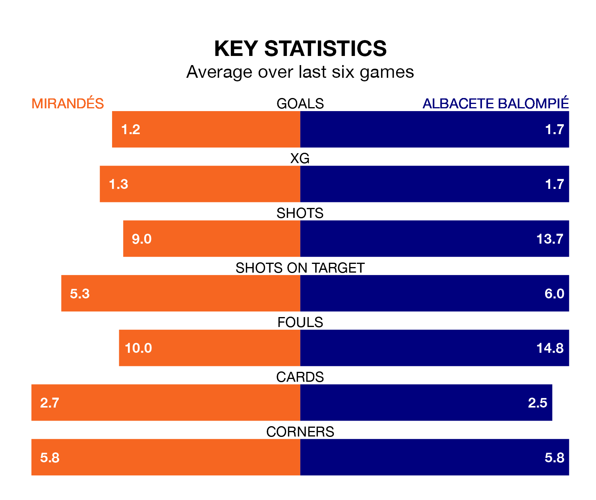

Mirandés host Albacete Balompié on Saturday at Estadio Municipal de Anduva in the Segunda División.
In their last league match, on December 9, Mirandés drew with Burgos CF 0-0 away.
Albacete won, 2-0 at home against Villarreal B on December 8, with Agustín Medina Delgado and Manuel Fuster Lázaro on the scoresheet.
With 27 goals in 19 games so far this season, Mirandés are scoring more than average in the league with 1.4 goals per game. But they are conceding more than average too, letting in 28 goals at a rate of 1.5 per game.
Albacete are also above average scorers, with 1.3 goals per game, compared to a league average of 1.2. They have conceded 1.5 goals per game.
In the last five years, Mirandés and Albacete have played each other on six occasions. Mirandés won two of them, Albacete three, and they drew once.
On average, Mirandés scored 1.3 goals and Albacete Balompié 1.5 in those matches.
Their last meeting was on May 27, when Albacete won 2-1 at home.
Albacete Balompié are 15th in the table after 19 games, of which they have won six and drawn six, earning 24 points.
The home team are one place ahead of the visitors in 14th, with six wins and six draws putting them on the same number of points.
Mirandés are in mixed form in the Segunda División, with one win and four draws from their last six games.
With two wins and three draws over that period, Albacete's form is slightly better – they have taken nine points from 18, compared to Mirandés' seven.
Albacete's Fuster Lázaro is among the league's most creative players, racking up five assists in 19 appearances so far this season, and holding fourth spot in the Segunda División's assist charts.
For the hosts, Gabriel Martínez Aguilera has set up the most goals, having laid on four assists in 19 games.
